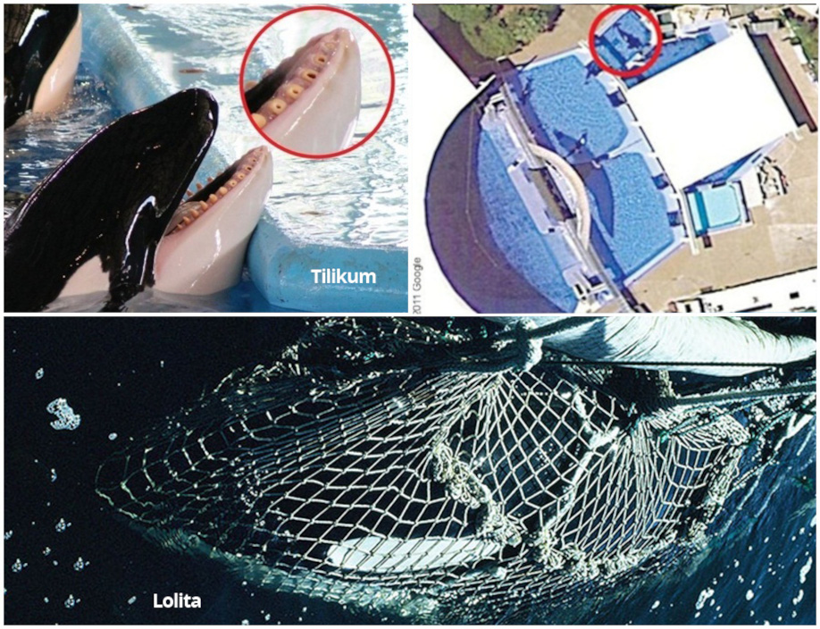

Saiba onde estão as 58 orcas cativas no mundo e como ajudá-las
Redação: Anda – Agência de Notícias de Direitos Animais
Conforme a maré continua a mudar e a oposição pública aos cativeiros de mamíferos marinhos se intensifica, empresas que exploram orcas cativas estão se vendo em um impasse. Um dos exemplos mais significativos é o do SeaWorld, que enfrentou intensa rejeição do público após o lançamento do documentário Blackfish, e recentemente anunciou que irá encerrar os shows com orcas, conforme publicado pela ANDA. Porém, esta ainda não foi uma decisão favorável para os animais, uma vez que o parque pretende mantê-las confinadas para o que chamam de “atrações educativas”.
O fato é que, enquanto tais parques não fecharem, os mamíferos marinhos neles confinados continuarão a sofrer e ser explorados.
Isso se tornou evidente quando, a 7 anos, uma severa tempestade devastou o parque aquático Marineland Antibes, na França, destruindo os sistemas de filtro e oxigenação que são vitais para a saúde dos animais. No dia 12 de Outubro, o parque confirmou a morte de uma orca de 19 anos de idade chamada Valentin.
Na sequência da morte de Valentin, o site One Green Planet divulgou um levantamento de todas as orcas que continuam sofrendo nas mãos de humanos a pretexto de um mero entretenimento. Segundo a reportagem, atualmente há 58 orcas sendo mantidas em cativeiro no mundo. Conheça, a seguir, as suas histórias.

Tilikum foi escravizada desde os dois anos de idade. Morreu no SeaWorld de Orlando na Flórida em 2017, a orca, mundialmente conhecida pelo episódio que causou a morte da treinadora Dawn Brancheau, qual a orca também foi vítima. Quando tinha apenas 2 anos, Tilikum foi roubada de sua mãe e família nas águas da Islândia para ser explorada em aquários, a orca morreu precocemente aos 36 anos de idade.
Segundo a reportagem, atualmente há 58 orcas sendo mantidas em cativeiro no mundo. Conheça, a seguir, as suas histórias.
Esse parque confina quatro orcas, que antes eram seis – Valentin e sua mãe Freya, que morreram recentemente. Todas as orcas remanescentes, Wikie, Inouk, Moana e Keijo nasceram no cativeiro. De acordo com uma fonte, elas não estão passando bem e têm tido dificuldades para comer desde a inundação ocorrida no mês passado. Diversas organizações estão pedindo que o Marineland, dada a gravidade da situação, “aposente” as orcas, mas aparentemente não há essa intenção por parte da empresa.
Seis orcas vivem no Loro Parque: Keto, Tekoa, Skyla, Adan, Morgan e Kohana. Todas, exceto Morgan e Adan, nasceram em parques do SeaWorld dos Estados Unidos antes de serem enviadas para a Espanha. Adan, um macho de cinco anos de idade, foi o primeiro a nascer no Loro Parque. Morgan, uma fêmea de oito anos, há muito tempo tem sido o centro de uma controvérsia após ser resgatada na Holanda em 2010. Depois que a consideraram como não passível de ser devolvida à natureza, Morgan foi enviada ao Loro Parque em 2011 onde vive com as orcas remanescentes e é forçada a fazer performances para o público diariamente.
Acredita-se que, Kshamenk, a única orca confinada na América do Sul, esteja com 26 anos de idade. Ele é mantido em cativeiro desde que foi capturado com apenas cinco anos, em 1992, na costa de Buenos Aires. Embora a razão da sua captura envolva relatórios conflitantes, o fato inegável é que ele era um animal saudável que foi retirado da natureza para nunca mais ser devolvido. Segundo fontes, o SeaWorld tem uma relação com o Mundo Marine e usou sêmem coletado de Kshamenk para inseminar artificialmente as suas orcas fêmeas.
No Marineland de Ontario, onde já estiveram confinadas dezenas de orcas, agora reside apenas uma. Kiska foi capturada da natureza na costa da Islândia quando tinha somente três anos de idade e foi mantida presa em cativeiro desde então. O Marineland perdeu 17 orcas sob os seus cuidados, e Kiska é uma sobrevivente entre seus irmãos.
De longe o mais famoso dos parques marinhos e “dono” da maior população de orcas cativas do mundo, o SeaWorld confina atualmente 24 orcas no total em seus três parques em Orlando, San Diego, e San Antonio. A maior parte dessas orcas nasceu em cativeiro. A empresa insiste que é perfeita em prover a mais alta qualidade no cuidado com os animais e que mantém um impressionante programa de reprodução, mas deixa de mencionar as 37 orcas que já morreram sob os seus cuidados, muitas delas de forma trágica.
Miami Seaquarium, Estados Unidos
Capturada da natureza em 1970, Lolita passou a maior parte de sua vida em cativeiro. Aos 49 anos, ela teve apenas um companheiro durante todo o seu tempo de cativa. Infelizmente, Hugo faleceu em 1980. Desde então, Lolita vive sozinha em seu tanque de concreto, performando para audiências diariamente. Apesar de ser divulgado que Lolita é afeita aos seus treinadores, é evidente que o seu bem-estar no cativeiro é algo secundário diante do lucro que ela traz para o Miami Seaquarium. Isso pode ser percebido pela falta de melhorias em seu tanque, que é o menor do país.
Japão, China e Rússia
Há pelo menos vinte orcas vivendo presas em cativeiros em estabelecimentos de mamíferos marinhos da Ásia: dois no Japão, dois na Rússia e um na China. Nos últimos anos, a Rússia vem capturando orcas silenciosamente da natureza para serem colocadas em “dolphinariums” (aquario para golfinhos). Tristemente, a localização exata de todas as orcas é desconhecida, enquanto a Rússia é cada vez mais criticada por ter capturado esses seres sencientes e por sua displicência em informar o seu paradeiro.
O futuro do cativeiro
Até esse momento, as vidas das orcas em cativeiro continua tão monótona como sempre foi, mas há razões para se esperar algo melhor para o futuro. A perspectiva do SeaWorld de San Diego estar sendo forçado a parar com o seu programa de reprodução obriga a companhia a reconhecer a falha colossal em seu modelo de negócios: o público não quer mais assistir a orcas realizando performances antinaturais. Conforme as pessoas continuam a ver o valor da preservação e da educação em outros canais, o SeaWorld e outros parques marinhos estão em uma corrida para se adaptarem à nova realidade.
Em outras palavras, a melhor e mais eficaz maneira de forçar mudanças a favor dos animais é a atitude do público, deixando de comprar ingressos para atrações que explorem orcas ou quaisquer outros animais para entretenimento humano.
É permitida a reprodução total ou parcial desta matéria desde que citada a fonte ANDA – Agência de Notícias de Direitos Animais com o link. Assim você valoriza o trabalho da equipe ANDA formada por jornalistas e profissionais de diversas áreas engajados na causa animal e contribui para um mundo melhor e mais justo.